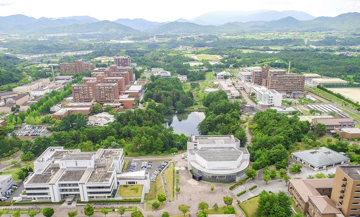
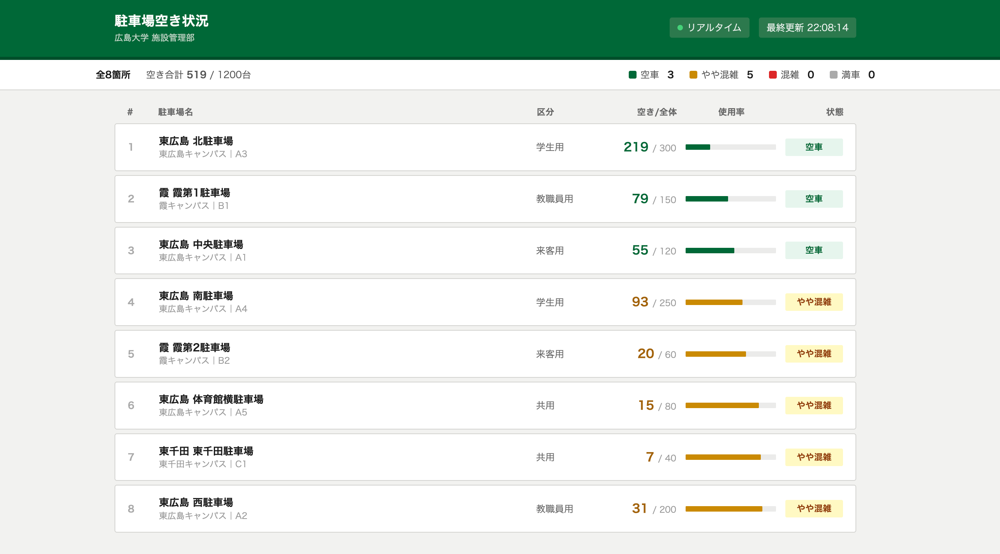
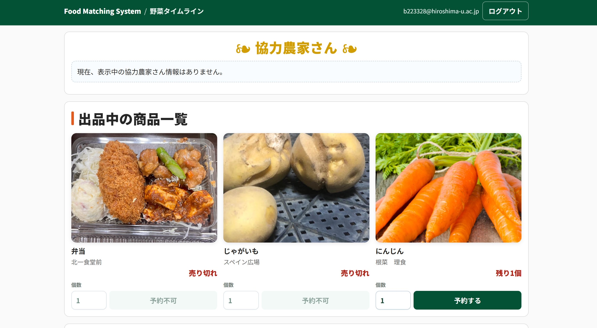
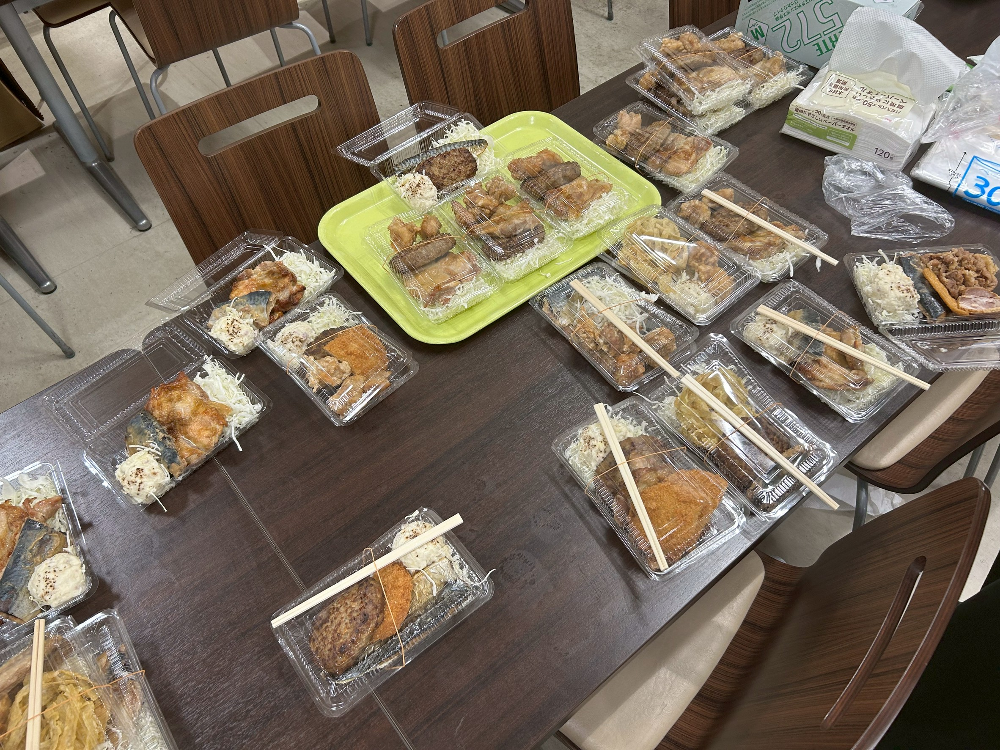
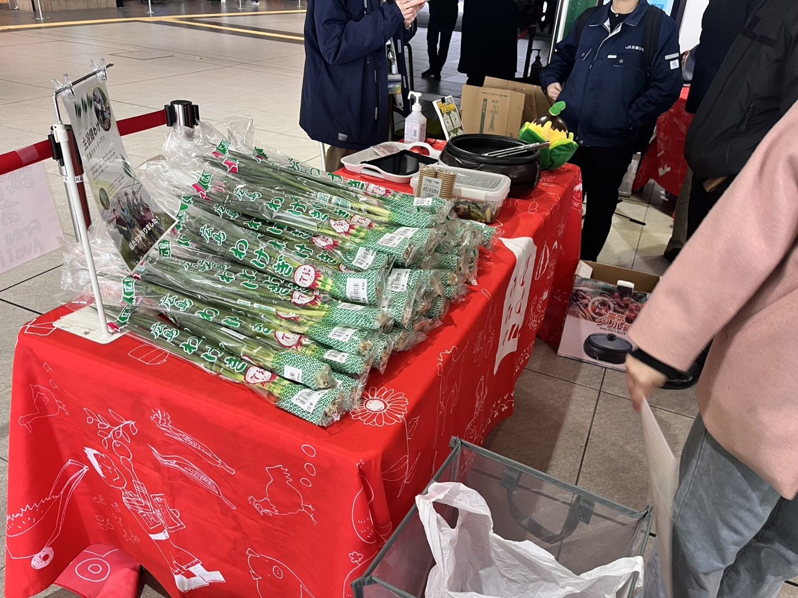
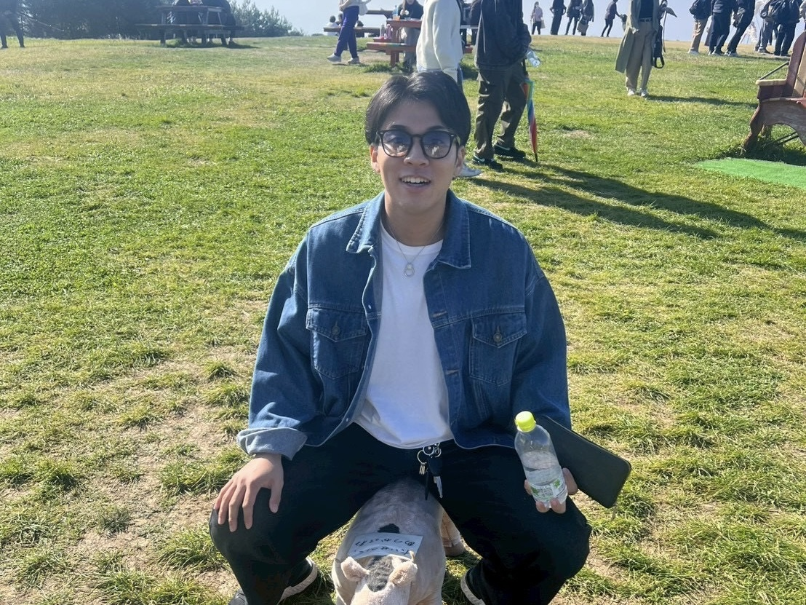
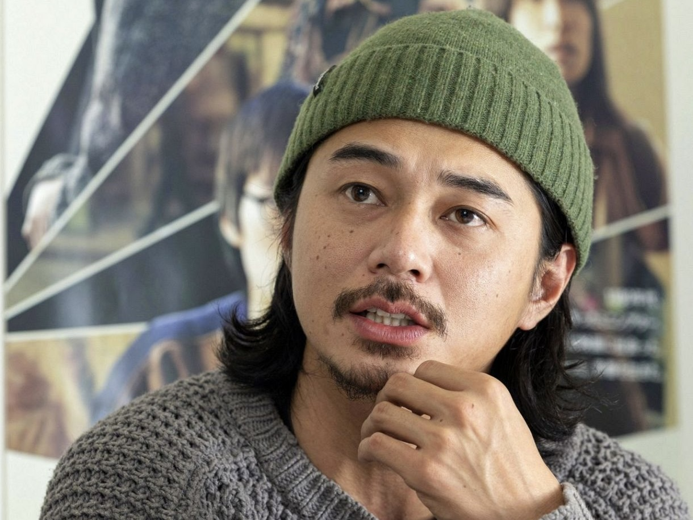
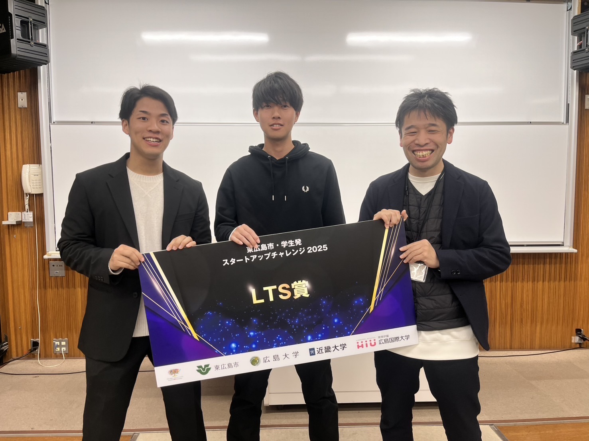

DX業務
業務課題の整理からデジタル導入・運用改善まで、現場に根づくDXを支援。
実績を見る

JA全農広島✖️リガーレで農業マッチングのコラボをしました

業務改善の事例共有を通して、実務に活かせるDXの考え方を発信しました。

課題： 空き状況が分からず、駐車場の利用効率が下がっていた 解決策： リアルタイムの可視化システムを導入し、空き状況を即時確認できるようにした

課題： 廃棄予定の食品情報が共有されず、フードロスが発生していた 解決策： 商品登録だけで出品できるアプリを構築し、余剰食品を迅速に販売できるようにした


課題： 食品の受け渡し工程が煩雑で、配送の遅延やロスが発生していた 解決策： 受け渡しフローを標準化し、寄付先へ安定して届ける配送体制を構築した

課題： 販売機会の不足で、地域産品の認知と販路拡大が進みにくかった 解決策： マルシェを企画運営し、学生と地域をつなぐ販売導線を作って完売を達成した
課題： 収穫期の人手不足で、作業遅延と取りこぼしが発生していた 解決策： 農業に興味のある学生をマッチングし、収穫作業を短期間で集中対応した
CEO
事業戦略と営業統括を担当。地域と企業をつなぐ新しい価値づくりを推進しています。

Off
休日はカフェ巡りとランニング。アイデアを整理しながら次の企画を考える時間を大切にしています。
Project Manager
DX案件の進行管理を担当。課題整理から運用定着まで、現場目線で伴走します。

Off
オフの日はサウナと読書でリフレッシュ。キャンプ生活も好き

Creative Director
ブランド設計とデザインを担当。伝わる表現と使いやすさを両立した体験を設計します。
Off
写真撮影とアート鑑賞が趣味。街歩きの中で見つけた色や形を、クリエイティブに活かしています。
CTO
ブランド設計とデザインを担当。伝わる表現と使いやすさを両立した体験を設計します。
Off
休日は料理とアウトドア。手を動かして試すことを楽しみながら、発想の幅を広げています。